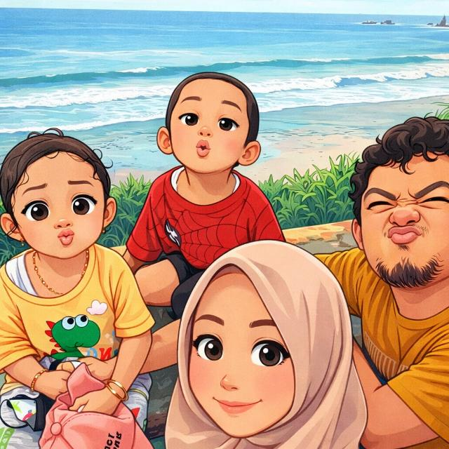
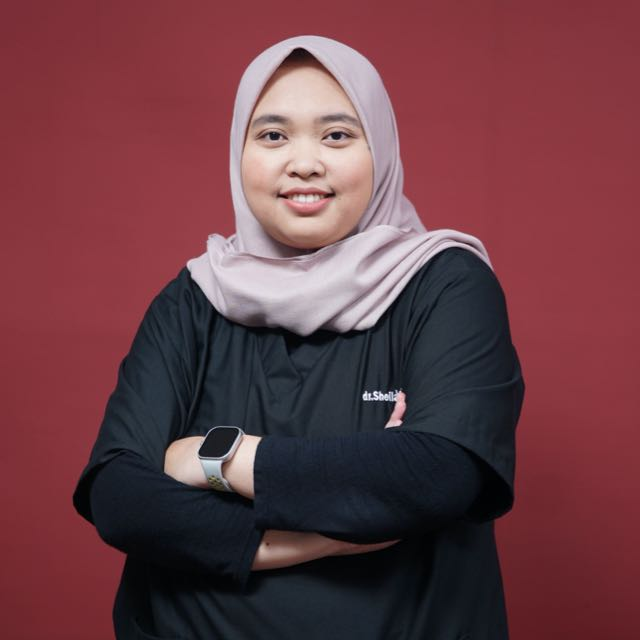

Senyum, Salam, Sapa, Sentuh InshaAllah Sembuh. Pelayanan kesehatan keluarga dengan tenaga medis profesional, ramah, cepat, dan terpercaya.
Sistematis dan ramah. Berikut langkah praktis yang dialami pasien dari pendaftaran hingga membawa pulang obat.
Pasien BPJS wajib melakukan pendaftaran online via aplikasi mJKN.
Pemeriksaan tekanan darah, nadi, suhu tubuh, dan berat badan.
Pemeriksaan dokter untuk menegakkan diagnosis dan menentukan terapi.
Pengambilan resep dan edukasi penggunaan obat kepada pasien.
Pelayanan gawat darurat buka 24 jam.
Konsultasi dan pemeriksaan dokter umum.
Perawatan dan observasi pasien.
Pelayanan ibu hamil dan persalinan.
Pemeriksaan darah, urine, fungsi hati, ginjal dan lainnya.
Pelayanan kesehatan gigi dan mulut.
Pelayanan konseling dan Suntik KB.
Pemeriksaan elektrokardiogram untuk evaluasi jantung.
Terapi fisik untuk pemulihan dan rehabilitasi.

Dokter Umum
Dokter Umum

Dokter Umum
Dokter Gigi
Fisioterapis
Alamat: Balegondo, Trosono, Kecamatan Parang, Kabupaten Magetan
Telepon: 085257119666
Email: shafaklinik@gmail.com
Chat WhatsApp